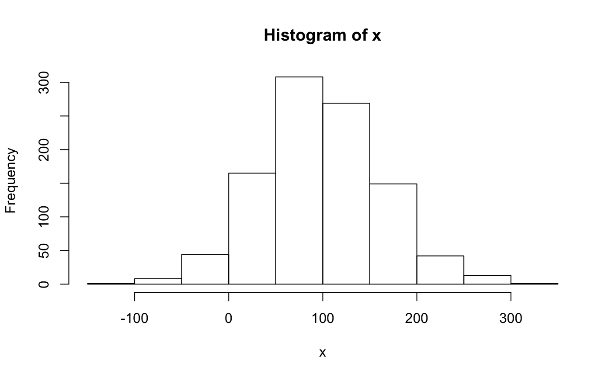

conflictPower-vignette.RmdThe c_score function generates a single simulated conflict score based on samples from a specified RT distribution for conflict and no-conflict conditions. The examples below defines the conflict effect as a difference of 100 between the mu parameters, and assumes 10 trials per condition.
The c_score function samples the specified number of RTs from each distribution, computes the mean for each condition (conflict and no conflict), and returns the difference (conflict - no conflict).
c_scores() generates n number of conflict scores. This can be useful for simulating n number of subjects in an experiment, or for simulating a sampling distribution of conflictd scores.
The sampling distribution is useful for understanding the precision of the design for measuring a particular individual’s conflict score. For example, with only 10 trials in each condition, the distribution of possible conflict scores for this subject is very wide.
x <- c_scores(subjects = 1000,
c_nmst= c(n=10,
mu=600,
sigma=100,
tau=100),
nc_nmst= c(n=10,
mu=500,
sigma=100,
tau=100))
mean(x)
#> [1] 101.5982
sd(x)
#> [1] 64.64704
hist(x)